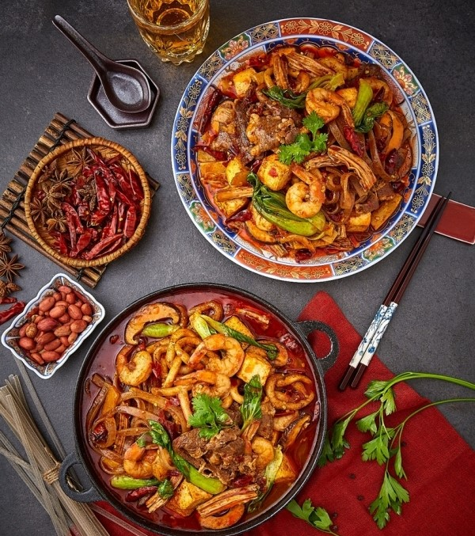
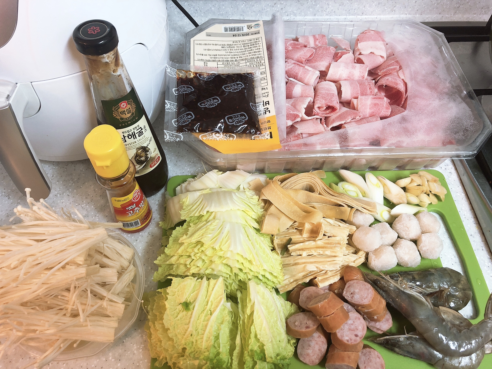
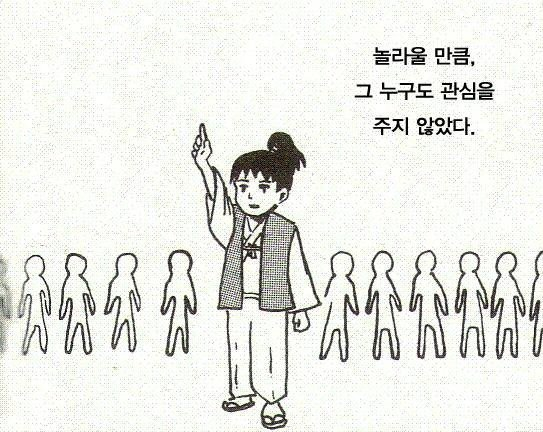

마라샹궈나 마라먹어
스트레스해소 | 술안주 | 1시간 30분 | 고급 | 조회수 5326213

우울할 땐, 레몬사탕ㅇ,,,아ㅅ 아니 마라샹궈지!
가끔은 사람도 울기에 최적화된 순간이 됐을 때
실컷 있는 힘을 다해 울어버릴 수 있으면 참 좋겠다 싶어요.
마음속에서는 이미 감정의 선을 넘었는데도 기어코 꼭 참는 사람들이 있거든요.
울만한 곳이 마땅치 않다 싶으면, 잘 찾아오셨어요.
여기는 마라샹궈입니다.
유니콘의 눈물 한 방울 들어간 특별 레시피

소고기 300g, 청경채, 알배추, 느타리버섯, 유부, 중국당면, 분모자, 새우, 숙주나물, 콩나물, 시판 마라소스
이렇게만 하면 모두 다 할 수 있어요

참깨빵 위에 순 쇠고기 패티 두 장 특별한 소스 양상추 치즈 피클 양파 까~지
(오직 하나뿐인 맛 빅맥) 빠빠빠라빠